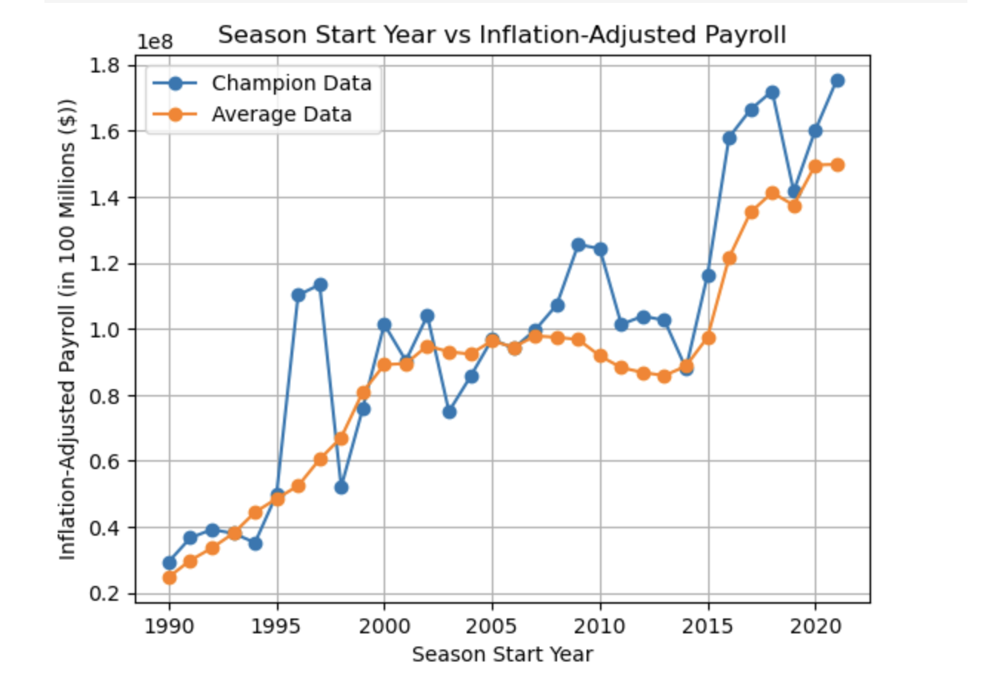

How Much Does It Cost to Win in the NBA?
Analyzed historical NBA payroll and championship data to study how much teams spend to win championships and how that relationship has changed over time. Built a reproducible Python analysis pipeline using inflation-adjusted payroll data, summary statistics, and visualizations to compare championship team spending against league-wide trends.
More details
Problem
In professional sports, team payroll is often assumed to be strongly tied to success, but the exact relationship is not always clear. This project investigates how much it costs to win an NBA championship and whether championship teams consistently outspend the rest of the league. The goal was to better understand long-term spending trends in the NBA and provide a data-driven view of the financial cost of building a championship team.
Approach
Combined historical NBA payroll data, player salary data, and championship results from external sources including Kaggle and Wikipedia. The analysis focused on cleaning and organizing payroll data across seasons, comparing championship team payrolls to league averages, and examining changes over time through exploratory visualizations and summary statistics. The project was structured as a reproducible notebook-based workflow, with dependency management handled through uv and a documented local setup.
Results & Impact
The project produced a set of visualizations and statistical comparisons showing how championship payrolls relate to overall league spending trends. The analysis highlighted that while championship teams often spend above average, spending alone does not fully explain success, especially across different NBA eras. This project demonstrates practical skills in data cleaning, reproducible analysis, sports analytics, and communicating results through well-documented notebook outputs.